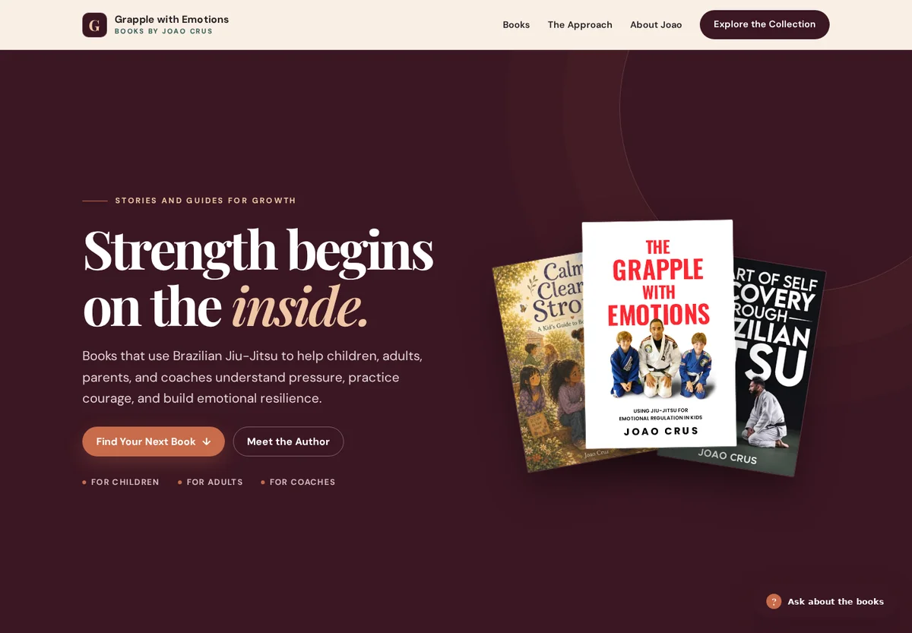
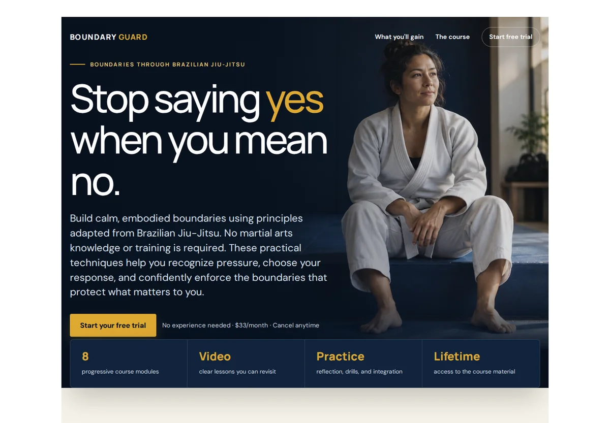
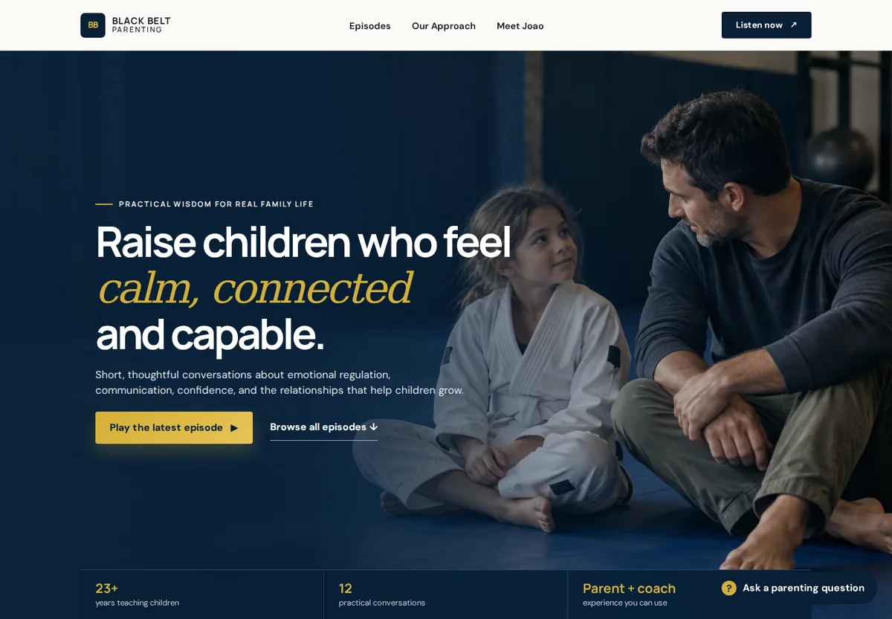

Skip to projects
Draft PreviewLocal review only · Not published
Books. Courses. Conversations.
Learning beyond the mat.
Explore Joao Crus's work beyond the academy. Different ways to learn, teach and bring the principles of Jiu-Jitsu into everyday life.
Explore the collection
01–05
● ● ●grapplewithemotions.com

Website preview · Captured September 23, 2026
01 Publishing · Education
Grapple with Emotions
Stories and practical guides by Joao Crus, connecting Brazilian Jiu-Jitsu with emotional regulation, boundaries and personal growth.
Explore the books ↗ (opens in a new tab)● ● ●jiu-jitsuclasses.online/courses/
Website preview · Captured September 23, 2026
02 Education · Online courses
Jiu-Jitsu Classes Online
Joao's online instruction brings together foundational curricula, focused technique studies and resources for teaching children.
Browse the courses ↗ (opens in a new tab)● ● ●blueprint.justjiuit.com
Preview unavailableBLUEPRINTNO LIVE PREVIEW TO SHOW
Availability checked September 23, 2026
03 Project · Verification pending
Blueprint
The supplied website returned “Site not found” during review. Its current content and project details have not been verified.
Link disabled until the destination is restored and reviewed.
● ● ●boundaryguard.joaocrusbjj.com

Website preview · Captured September 23, 2026
● ● ●blackbeltparenting.net

Website preview · Captured September 23, 2026
A common thread
Relational first. Physical second.
From the books to the conversations, Joao's work puts connection at the center of learning.
Return to the collection ↑